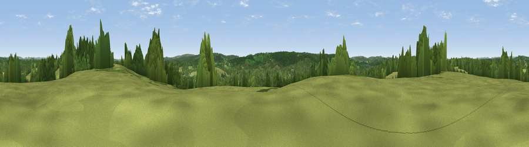

Viewpoint near Forest Row
#38157 in England · top 45% of its area beats it · near Forest RowWhere it is
The exact computed spot (TQ 43675 36325). Click the marker for map links.
The view, rendered

A 360° render of this exact spot computed from the terrain model, tree cover and land cover — summer colours, afternoon light, calibrated against photographs of famous viewpoints. Real trees, hedges and buildings will differ in detail.
The panorama
Grey silhouette: terrain skyline in each direction (720 bearings, Earth curvature and refraction included). Dashed green: skyline with trees (+15 m) and buildings (+8 m) as obstacles. Blue strip: how far the ground is visible on each bearing.
Where the view opens
Wedge length = distance to the farthest visible ground on that bearing (vegetation-aware). Rings at 10, 25 and 50 km.
What fills the view
51% woodland · 41% grassland · 6% cropland · 2% built-up
Angular shares of the visible panorama (visual magnitude), not map area. Landscape diversity 0.42 (0–1 Shannon).
Key numbers
More beautiful places nearby
The staircase of upgrades: each row has a higher view potential than everything closer. Driving times are estimates from straight-line distance, calibrated against real road routing — check an actual route before setting out.
| Place | Direction | Drive | Score |
|---|---|---|---|
| Viewpoint near Forest Row | S · 4 km | ~9 min | 41.0 |
| Viewpoint near Forest Row | S · 4 km | ~9 min | 46.6 |
| Viewpoint near Upper Hartfield | SE · 5 km | ~12 min | 59.6 |
| Viewpoint near French Street | NNE · 15 km | ~27 min | 64.5 |
| Viewpoint near Shipbourne | NE · 21 km | ~36 min | 66.2 |
| Viewpoint near Plumpton | SSW · 25 km | ~40 min | 80.4 |
| Viewpoint near Westmeston | SSW · 25 km | ~41 min | 80.9 |
| Ditchling Beacon | SSW · 26 km | ~41 min | 81.8 |
51.10822, 0.05097 · source: screening · position refined by local search. Computed location — check access rights before visiting.